Two plates, five days apart in salt. This is the comparison the whole page is built on. Everything below is an attempt to make that difference a number instead of an impression.
Arabidopsis on plates, in water and in soil. How we set the salt and heat doses, how a protectant gets onto a plant, and what eleven experimental sets have shown so far.
SectionWet Lab
Written byWet lab, plant sub-team
Last updated4 October 2026
StatusDraft for review
Contents
On this page
Overview and design
A protectant is only worth expressing if a stressed plant is measurably better off with it. Eleven experimental sets since May have gone into building an assay that can tell that difference apart from noise.
Salt at the wrong dose either does nothing or kills the seedling before a protectant has a chance to act, and either way the plates come out looking the same. A large part of the work below is dose-finding and protocol repair, because until the assay separates a rescued plant from an unrescued one, the screen has nothing to report.
Three growth systems run in parallel, and each one answers a question the other two answer badly. Agar is where a dose can be set exactly and a root can be measured. Hydroponics puts a known concentration around a root with no plate in the way. Soil is the only one a farmer recognises. Sections 1 and 2 are split the same way, so the design of a system and its results sit under the same name.
11Experimental sets, May to September
3Growth systems running in parallel
5Protectants in the screen
3Readouts, from set 4 onward
Running three systems at once is expensive for a team our size, and it is the reason there are eleven sets and not twenty. In return, a result seen in only one system is treated as a property of that system until another one repeats it.
Figure 1. All three systems, one chamber, 29 August. Plates and boxes above, soil below, on the same light and temperature. Sharing one chamber means a difference between systems can be put down to the system and not to the room.
One run, end to end
Every set on this page goes through the same six stages. Only the dates and the treatment change.
Stratify
4 days of stratification at 4 °C was for the purpose of synchronising the germination of imbibed seedlings, which ensures a homogenous growth of the plants.
Seeds go onto neutral ½ MS plates and sit at 4 °C in the dark. We began at two days on Dr. Kyle's advice to standardise it, then moved to four when germination in the salt sets was still ragged.
Prof. Cheng's feedback, written up on 2 September, added one detail we had been getting wrong: blow the seeds dry inside the safety cabinet after they come out of the cold, or the surface water carries them off the agar later.
The step we kept skipping is seed surface sterilisation. Dr. Kyle recommended chlorine-gas treatment in June for the bacterial contamination we kept seeing, and the minutes give unsanitised seeds as the reason we lost the whole first CH Bio peptide trial. Sterilise before sowing. We did not do it consistently, and it cost us that trial.
Medium
½ MS, MES buffer, pH 5.7 to 5.8; sucrose 3% (sets 1 to 3), 1% (from set 4)
pH adjust
KOH only, never NaOH
Duration
2 days (to June), 4 days (from July)
Sterilisation
Chlorine gas, advised June, not applied consistently
7 June. Seeds onto plates and into the cold, with an instructor at each elbow. Two days of stratification then; four from July.
Grow on
Plates move to the growth chamber at 22 °C and 40 to 45% humidity. Early sets transferred seedlings at four days old, which is the age at which a root is long enough to lift with forceps and short enough to survive it.
That turned out to be too young. Prof. Cheng puts the useful window at ten to twenty days old, and caps the salt at 200 mM for a plant of that age. Dr. Kyle had named the same 200 mM ceiling in July, after 250 bleached a whole set; we came down further still, to 150. She stages by development rather than by days: wait until the first true leaves are out, as the standard growth-stage scheme does [1]. Neither of the two set 8 decks records a run built that way: both put treatment four days after the plates entered the incubator, the same schedule as sets 1 to 7. See fix 6.
Chamber
22 °C, 40 to 45% RH
Age at transfer
4 days in every set we have a dated record for; the ten-day window is advice, not yet a run (fix 6)
Light
Supplementary tubes fitted in July after thin roots and pale leaves
16 June. The first vertical plates going into the chamber on their rack, standing at about ten degrees.
Transfer
Seedlings are lifted onto condition plates: square 13 × 13 cm plates stood upright for root work, round plates laid flat for rosette work. Square plates started at 9 to 10 seedlings per row, 18 to 20 per plate, and dropped to 8 per plate in July to leave room for roots that stay short. Round plates went from 25 seeds to 40 once we wanted enough tissue for a chlorophyll extraction.
Two details make a square plate measurable. Seedlings are screened for similar root length before they go on, so a group starts level; and every root tip is laid on a single straight line drawn on the back of the plate with a marker. Everything traced in ImageJ afterwards is growth from that line, which is why day 0 is the transfer and not the sowing.
Transfers are where contamination gets in. From July an instructor supervises every transfer, and plates come out of the sleeve by pushing through the plastic, with no hand inside it.
Square plate
50 mL, 1% agar, vertical rack at about 10°
Round plate
1% agar, horizontal (advice was 0.7 to 0.8%; see below)
Density
9 to 10 per row (sets 4 to 6), 8 per plate (from July), 40 per round plate
4 August. Moving seedlings one at a time. Whatever the destination, this is the step where contamination gets in.
Treat
Each protectant gets three arms: a day before the salt, the same day, and a day after. We need to know when a protectant has to arrive as well as whether it works, because the bacterium in the bioreactor has to be told at some particular hour to start making it.
How the treatment is applied has been rebuilt three times. Pipetting liquid onto a plate floated the seedlings off the agar, and flooding the surface to get even coverage risks hyperhydricity, the glassy water-soaked tissue you get from leaving a plant submerged. Spraying reaches the leaves but leaves droplets on them. The current method transfers the plants onto a fresh plate that already contains the treatment, so the dose is set by the medium and not by what stayed on the plant.
The pipetting protocol also left a confound. Protectant added a day early is still in the agar when the salt arrives, so the pre-treatment arm is in effect pre- plus co-treatment at a higher cumulative dose. We raised this in August and did not solve it until set 8 moved to transfers, so every pre-treatment result before that carries it.
Each compound reached the plant a different way, and the differences are large enough that a number from one phase should not be compared with a number from another.
Arms
Pre-, co-, after-treatment, plus untreated control
Phase 1, trehalose
Stirred into the molten agar before it set, so dose is a property of the plate. Sets 1 to 6.
Phase 2, CH Bio peptide
1:500. In the plate that is 100 µL of stock into 50 mL of agar; onto the surface it is 3 mL flooded on and 2 mL drawn back off, leaving 1 mL. Every other group got 1 mL of sterile water the same day, so the liquid itself is controlled for. The supplier did not give us a mass concentration, so we cannot state µg mL−1.
Phase 3, ACC deaminase
Passed through a 0.22 µm filter, then sprayed: three sprays from 10 cm, aimed top left, top right and bottom. On vertical plates the same nozzle delivers 1.67 mL in three sprays, aimed up, left and right, with nothing at the bottom because it runs down there anyway.
Application
Pipette (to Aug), spray (Aug), plate transfer (from Sept)
9 July. 富肽2號 on the bench the day it came back from CH Biotech. At 1:500 it became experiment set 7.
Observe
Six to seven days of daily photographs on a fixed rig. The first version, in May, was a phone in a light box over a round plate; a 3D-printed holder that takes a vertical plate at a repeatable position followed in July, with a black background, lights above and a camera on a stand. Before any of it, plates were held by hand and two photographs of the same plate could not be compared.
Bleaching, mould and root reorientation are all logged as they appear, with the date and the person on shift. A mouldy plate is recorded and then excluded, because a fungus alters the medium and slows roots it never touches. Its lid stays shut from then on, or the spores go everywhere. We broke that rule once, cutting a mouldy plate in half on 20 August to save the other side. It held for a day and the whole plate was gone by the 23rd.
1 June. The photo stand the dry lab built, in use. Without it, pictures from two different days could not be compared.
Score
We score three readouts because each one fails in a different way. Root length is cheap and sensitive, but it only reads the part of the plant that salt hits first. Fresh weight is crude and hard to argue with. Chlorophyll is closest to what a farmer would notice.
Not every set carries all three. Sets 1 to 3 were scored by counting seedlings that were visibly growing, and have no chlorophyll data at all. Set 7 runs on round plates and has chlorophyll, fresh weight and leaf area but no root length. So the rule below, that two readouts have to agree, could only be applied from set 4 onwards.
Chlorophyll gets reported twice, normalised to fresh weight and not, because salt-stressed seedlings weigh so much less that dividing by their weight can make a dying plate look greener than a healthy one. In set 7 trial 3 the normalised figures put the salt-treated groups above their own unstressed control; without the normalisation the control is the highest value on the sheet.
Root length
ImageJ, outliers marked and kept in the raw sheet [6]
Fresh weight
Pooled seedlings (10 per tube in the protocol, 40 for a round plate), tared microcentrifuge tube. Whole seedling, not shoot only.
Chlorophyll
Beads, freeze at −80 °C, 80% acetone, vortex to white, centrifuge, read the supernatant [5]
Equation
(20.2 × A645 + 8.02 × A663) × V / (1000 × FW), in mg g−1
Extraction volume
V was 1 mL, 2 mL or 4 mL depending on the set, so values are not directly comparable between sets
28 June. Reading a plate against the light, before anything gets measured off it.
The first rig, 31 May. A phone in a light box over a round plate. We built it because two photographs of the same plate, taken by two people on two days, could not be compared, and every measurement on this page depends on that comparison. The 3D-printed holder for vertical plates came in July.
Agar
Uniform nutrients, an exact salt dose and a root you can photograph. Agar is where the screen is calibrated, and where a protectant has to show an effect before it is worth taking anywhere else.
Why agar
Agar trials were conducted to fine-tune protectant treatments and NaCl stress within a controlled laboratory environment, ensuring uniform nutrient availability and precise stress exposure. This setup enabled the evaluation and screening of protectant efficacy, helping identify top performing protectant candidates while establishing clear physiological baselines prior to testing in complex soil systems. Furthermore, agar media provide essential nutrients and an accelerated timeframe for observing early physiological changes in Arabidopsis seedlings, facilitating rapid and high-throughput testing across subsequent experimental iterations.
It runs in two orientations. Square plates stand upright at about 10° so roots grow down the surface and can be traced in ImageJ. Round plates lie flat, hold forty seedlings, and give enough rosette tissue for a chlorophyll extraction. From August the screening runs moved to round plates, because by then the readout that mattered had moved from root to shoot.
Its weakness is that agar is not soil. There is no microbiome, no drainage and no water potential gradient, and a plant on a plate never has to grow a root system that finds anything.
Two faults are still open. Dr. Kyle's advice in June was to pour horizontal plates at 0.7 to 0.8% agar because 1% is too thick; we kept 1%, seedlings failed to root into the surface in August, and the September decision was to stay at 1% across a treatment series so the plates in one comparison match. That keeps the plates consistent but does not answer Dr. Kyle's point.
The second is the roots that turned around. On day 3 of set 5, almost every root on the untreated 150 mM plate reversed and grew upward or sideways, and no other group did it. Our notes at the time guessed halotropism. That is probably the wrong word: halotropism is a root bending away from a salt gradient, and a plate salted uniformly has no gradient, so the likelier reading is that salt disrupted the gravitropic response itself. We logged it, never quantified it, and root length from that plate is not comparable with the rest.
17 June, and the reason plates get labelled now. A rack loaded the wrong way round for a few days is enough to turn a root length experiment into nothing. These seedlings were moved into the hydroponic boxes instead.
Set design
In total, we conducted 8 experiments under NaCl-induced salt stress. Among these, six sets evaluated the non-reducing disaccharide trehalose, which has been shown to have a protective effect under salinity stress (PMID: 25400644). The remaining two sets used commercially available CH Biotech’s peptide as our positive control. One additional set used purified ACC deaminase against salinity stress. Our pre-test conditions of experimental set 1-2 were surrounded against testing out protocols and the initial response of plants to NaCl, which is why we only used 50 mM, 100 mM and 150 mM of NaCl and 0.5 mM and 1 mM of trehalose. However, we soon realized that the 150 mM of NaCl was too strong for the plants and they dried out easily, and while our data predicted the effect of NaCl on the plants, there were no visual differences between adding protectant and not adding any.
Continuing with the belief that higher NaCl stress should be fought with higher trehalose content, we conducted experimental set 6, where 0 mM and 5 mM of trehalose was used against 0 mM, 75 mM, 100 mM and 150 mM of NaCl.
For our seventh experimental trial, we made a few key changes in our plant stress and protection protocol. Firstly, we wanted to verify the purpose and need for an AIoT prediction model and stress sensors in the farming environment, so one of our chosen independent variables was the treatment time. The pre-treatment group would have CH biopeptide added 1 day before stress strikes, the co-treatment group would have the protectant added on the same day, then the after-treatment group would be treated one day after the NaCl is added. Next, the CH biopeptide had a recommended dilution level, which was 1/500, for optimal usage, so we did not change the concentration as it would not be used in real fields with a changed concentration level either. Lastly, this group of plants went through 4 days of stratification and 4 days at 22 degrees celsius before the pre-treatment group started directly in their plates. Unlike previous experimental sets, we did not want the salt stress and protectant applied on the first day, and as Arabidopsis plants are extremely fragile and vulnerable to transfer, we decided to add the NaCl and CH biopeptide directly into the agar plate (see below for protectant application).
Moving on to the first ACCD pre-test, we purified our first round of ACCD and contained it in multiple 15 mL centrifuge tubes for treatment. We had changed the method of treatment to spraying, one up, one left, and one right, yet we followed the same pre-treatment, co-treatment, and after-treatment protocols (see protectant application for more details).
The run sheets for sets 1 to 7Tables 1 to 3, as the team wrote them
Experimental set
Date (starting from the incubator)
Duration
Purpose
Protectant
NaCl
Protectant concentrations
#1
20260510 → 20260523
14 days
pretest: 1. practice and familiarize with planting arabidopsis in agar plates and overall protocol 2. fine tuning salinity concentrations
Trehalose
50 mM and 100 mM
1 mM
#2
20260520 → 20260604
16 days
pretest: 1. practice and familiarize with planting arabidopsis in agar plates and overall protocol 2. fine tuning salinity concentrations 3. 1mM trehalose too toxic
Trehalose
100 mM and 150 mM
0.5 mM
#3 trial 1
20260527 → 20260607
10 days
pretest: 1. fine tuning lower trehalose concentrations against standardized 100mM NaCl (best performed) 2. the 1 and 0.5mM concentrations has some levels of inhibitory effects on plant growth
Trehalose
100 mM
0.125, 0.25, 0.5 mM
#3 trial 2
20260529 → 20260611
13 days
pretest: simultaneous trials within experiment set 3 to increase sample size
Trehalose
100 mM
0.125, 0.25, 0.5 mM
Table 1: Overview and further elaboration on pretest experimental sets, including experimental sets 1 to 3
After sufficient hands on experience on protocol designing and standardizing the structure of our setups, we started official trehalose testings beginning from experimental set #4 to #6, each set varies by the different NaCl and trehalose concentration combinations, which subjects plants from low to high stress levels to evaluate the protectants’ effectiveness in response.
Experimental set
Date (starting from the incubator)
Duration
Purpose
Protectant
NaCl
Protectant concentrations
#4
20260618 → 20260630 (stratified 2 days)
12 days
Sucrose: 3% → 1% prevent dehydration <After discussions and meetings with Dr. Kyle:> Switch from horizontal to vertical planting: better observe gravitational root length growth, to enable imageJ analysis ½ MS agar plate → 50ml (with 1% sucrose, MES buffer and 1% agar) Plant stage: 4-day-old seed Experiment readout: Root length, Fresh weight, Chlorophyll content
Trehalose
100 mM
0.25, 0.5, 1.0 mM
#5 trial 1 and 2
20260704 → 20260712
18 days
Concentration adjustment: NaCl: Test with significantly higher NaCl stress levels Trehalose: Test the effectiveness of higher trehalose concentration change stratification duration from 2 → 4 days more diverse data for dry lab modeling
Trehalose
0, 150, 250 mM
1, 5, 10 mM
#6
20260729 → 20260803
6 days
Concentration adjustment: NaCl: Test with smaller intervals of NaCl concentrations (75, 100, 150mM) Trehalose: Test with the protectant concentration with best rescue effectiveness based on Exp set#5 → 5mM trehalose
Trehalose
75, 100, 150 mM
5 mM
Table 2: Overview and further elaboration on experimental sets 4 to 6
Experimental set
Date (starting from the incubator)
Duration
Purpose
Protectant
NaCl
Protectant concentrations
#7 (3 repeated trials)
trial 1: 20260801 → 20260808 trial 2 and trial 3: dates not recorded
8 days
Testing with commercial protectant (正潞) under different treatment time pre-treatment (1 day before) co-treatment (day 0) after-treatment (1 day after) control using horizontal plates with 40 seeds per plate close lid while agar solidifies, so the plant penetrates the agar
CH bio peptide
trial 1: 100 mM trial 3: 75, 100 mM
1 mL of diluted protectant to every treatment group (1/500 dilution rate)
Table 3: Overview and further elaboration on experimental set 7
Stress dose
A protectant can only be seen in the gap between a stressed plant and a rescued one. Too little salt and there is no gap. Too much and the plant is dead before the protectant matters, which is the same result as a protectant that does not work.
The 1 to 10 mM trehalose range, and the 150 and 250 mM salt levels that went with it, came off a published dose study [2]. Experiment set 5 showed what the top of that range does. At 250 mM NaCl, seedlings began bleaching white on day three and almost every plant in the 250 mM plates had bleached by day five. The run was stopped at day six. Chlorophyll readings from those plates came out below the blank, the reading you get with no plant at all.
No trehalose5 mM trehalose±1 standard deviation, n = 9
The per-seedling workbook arrived in the 22 September data drop and records every root separately: nine per group, traced in ImageJ on 3 August, six days after transfer. So these are means with a spread, which the page could not show three weeks ago. They are not replicates. Nine seedlings on one plate share a pour of agar, a position in the rack and a day of light, so they are nine measurements of one plate and not nine runs of the experiment.
The ladder holds up: 74.95, 34.77, 11.00 and 1.36 mm, with spreads that do not overlap. The trehalose comparison does not. At 100 mM the treated group sits 3.71 mm above the untreated one against a pooled standard error of about 2.3; at 75 mM it sits 5.59 mm below against a pooled standard error of about 3.3. Only the 150 mM pair comes close to separating, and that is a 1.17 mm gap on roots that have barely grown. Nothing here upgrades trehalose.
Figure 2. The dose ladder, day 6. Experiment set 6, photographed 3 August, six days after transfer onto the condition plates. Top row untreated, bottom row 5 mM trehalose, salt increasing left to right. This panel is where the working range came from: 75 and 100 mM injure the plant and leave it alive, 150 mM does not. Day numbers on this page count from transfer, not from sowing; our own decks are not consistent about this and we have re-anchored them here.
The ladder sets the window the rest of the work runs in. Below 50 mM the seedlings shrug the salt off. At 150 mM, roots stop at under 2 mm and there is nothing left to rescue. So screening runs at 75 and 100 mM. We took those numbers off this ladder; the advisors set only the ceiling. Dr. Kyle in July and Prof. Cheng in September both put it at 200 mM, and 75 and 100 sit well inside it.
Figure 3. The same ladder on round plates, and a run we lost. A no-protectant repeat of the ladder started 18 August, to check whether bleaching scales smoothly with salt. The 100 mM plate was taken over by a fungal mat within six days. We keep photographs like this in the record, because the contamination rate is itself a result about the assay.
Fix 1 · two files, one experiment, three different averages
Until this week the numbers above came from Experiment Set 6 Root Length.docx. Three of its eight values disagree with the per-seedling workbook Arabidopsis Root Length Raw Data.xlsx, sheet experiment 6, and the other five match to three decimals.
150 mM NaCl: 1.753 against 1.364 mm. The nine seedlings read 0, 1.534, 2.014, 1.856, 1.424, 0.806, 3.544, 1.096 and 0. The docx figure is the mean of the seven that grew. Dropping the two that did not is a decision about what a dead seedling contributes to a mean, and neither file states the convention. This page now averages all nine, because a treatment that kills two plants in nine should not be rewarded for it. The old 1.8 mm is gone from the chart and the prose.
100 mM plus 5 mM trehalose: 13.602 against 14.713 mm. This one does not reconstruct at all. The nine seedlings sum to 132.421, and 13.602 is not that sum over nine, eight or seven; no single exclusion produces it.
5 mM trehalose control: 72.107 against 71.965 mm. Small, and unexplained for the same reason.
Whoever built the docx table has to say which cells went into each average, and the docx has to be corrected or withdrawn.
Fix 2 · the salt in the written protocol
Our own agar salinity protocol, Salinity stress on agar.pdf, section C, does not make the concentrations it labels. Step 5 splits a 600 mL batch into three flasks of 200 mL and labels them 0, 150 and 250 mM. Step 6 adds 2.192 g of NaCl to the 150 mM flask and step 7 adds 3.652 g to the 250 mM one. At 58.44 g mol−1, 2.192 g in 200 mL is 187.5 mM and 3.652 g in 200 mL is 312.5 mM. Both are exactly 1.25 times the label, which is what those masses give if they were weighed for 250 mL and the volume was later changed to 200.
Two readings are open and the file settles neither. Either the masses are right and step 5 should read 250 mL, in which case the labels are correct and nothing changes; or the volume is right and every plate made to this sheet carried a quarter more salt than its label.
How far it reaches is also open. This protocol describes the 0, 1, 5 and 10 mM trehalose against 0, 150 and 250 mM NaCl design, which is experiment set 5 only. The salt ladder in Figure 2 comes from set 6, at 0, 75, 100 and 150 mM, and no recipe for set 6 is written down anywhere in the archive: the agar formula column of the master run sheet is empty for all eight sets. Nothing in Figure 2 is restated here, and no concentration anywhere on this page has been rewritten, because the labels stay as the team recorded them until somebody settles which end of the protocol is wrong.
If it does turn out to cover set 5, it partly explains two things this page already reports: that 150 mM was harsher than expected and dried the seedlings out, and that 250 mM killed almost everything by day three. Whoever weighed that salt should check the bench notes for the flask volume.
Treatment timing
Day −1
Pre-treatment
Protectant a day before the salt. Tests whether the plant can be primed in advance of a forecast.
Day 0
Co-treatment
Protectant and salt together. The simplest case to run and the easiest to interpret.
Day +1
After-treatment
Protectant a day after the salt. Tests rescue after the damage has started, which is the realistic field case.
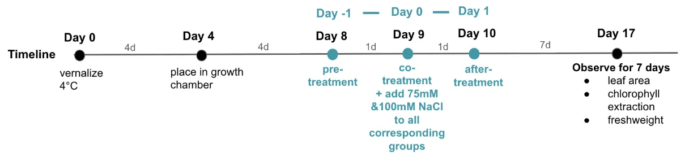
Figure 4. One run on the calendar. Four days of stratification at 4 °C, four days of germination, then the three treatment arms a day apart with the salt going in on day 9. Observation runs for a week from there. This is the schedule sets 4 to 7 were built on, and the one sets 8 onward inherited with a longer germination window. The team's drawing.
Application
Pipetting the treatment onto a horizontal plate seemed obvious. Surface tension meant the liquid would not spread, and the seedlings that had not yet rooted into the agar floated off with it. Adding 3 mL to submerge the surface and drawing 2 mL back off gave even coverage, at two costs: a film of water left on plants that then went back in the incubator, and the risk of hyperhydricity, the glassy water-soaked growth that comes of leaving tissue submerged.
Spraying was next, at about 15 cm with a sterilised sprayer, and it reaches leaves properly. It also leaves droplets sitting on them, and Prof. Cheng's instruction, recorded on 2 September, was to dry the leaves before the plate goes back in the chamber, because water sitting over the stomata gets in the way of the plant's gas exchange. Her broader ruling was simpler: for salt and protectant, do not spray, transfer.
Salinity testing, in three phases
Phase 1: Trehalose + NaCl combinations. In phase 1 of trehalose testing (including 3 sets of pre-tests and 4 sets of official testings) fine tuned concentrations of trehalose protectants were added directly into the mixture with agar before solidifying, meaning each experimental group contains the corresponding trehalose and salinity concentrations. We selected vertical planting of agar plates to allow clearer and better visions for root length observation and analysis.
On Day 0, sterilized Arabidopsis seeds were stratified on ½ MS neutral vertical agar plates for 4 days at 4 °C, and moved to the incubator for 4 days germination. On day 8, 4 days old Arabidopsis seedlings were transferred to each of the newly made vertical salinity agar plates containing a corresponding mixture of trehalose with NaCl. During the transferring process, we screen for seedlings with similar root lengths and similar growth levels, and place 12 seedlings per salinity plate with each of their tips of the roots onto a straight baseline drawn by a marker. Thus we could immediately start observing the seedling’s root length difference and physiological changes after they are exposed to different concentrations of NaCl and trehalose, evaluating the rescue effectiveness and growth for each combination over a course of 14 days.
Phase 2: CH Bio Peptide + NaCl. Using commercial CH bio peptide, the primary objective is to evaluate the efficacy of commercial protectants’ effectiveness and identify its best application timing in response to the exact point where salinity stress hits. Therefore, CH bio peptide application is categorized into 3 treatment timing groups: pre-treatment, co-treatment, and after-treatment. Different treatment timings are essential connecting to our project goal, “to supply protectants at the optimal timing before stress harms the plants”. These 3 treatment timing groups and the control group (no protectant) were each subjected to three NaCl concentrations (0 mM, 75 mM, and 100 mM), giving a total of 12 experimental conditions.
Looking at the entire experiment timeline, on day 0, Arabidopsis seeds were stratified on ½ MS neutral agar for 4 days at 4 °C, then transferred to a growth chamber for 4 days germination. Protectant applications were initiated subsequently starting from Day 8, and administered at 24-hour intervals between each treatment timing. Treatment timings can be considered as another set of days (Day −1: pre-treatment, Day 0: NaCl and co-treatment, Day 1: after-treatment). Thus, the day of salt stress application is Day 0, whereas NaCl (75 mM and 100 mM NaCl) was applied to all corresponding treatment groups, coinciding with the application for the co-treatment group.
On the technical side, we applied the protectant directly onto the surface of the agar by adding 3 mL then removing 2 mL of excess to achieve a 1 mL of final protectants added (the surface tension of the agar causes uneven distribution of protectant, therefore we added a larger volume of protectant to completely submerge the surface first, then suck out the excess protectants lastly). Furthermore, to prevent varying factors of growth between groups with and without protectants added (as liquids can affect plants’ absorption and growth), we added the equal volume of sterile water (1 mL) to every other group to simulate equal liquid effects on plants.
Phase 3: ACCD, LEA and BoPep4 + NaCl. Secreted by our engineered Bacillus subtilis, ACC deaminase, LEA and BoPep4 were used as the protectant against salinity stress in Phase 3. Before applying, the protectant was purified through a 0.22 µm filter. The main difference between this phase’s protectant application is that we utilized a spraying method. We used a sterilized spraying nozzle to dispense 3 sprays of ACCD onto the surface of plants, administered by spraying in 3 equal areas of individual sections (one top left, one top right, and one bottom) through a distance of 10 cm between the nozzle and agar plate.
The overall experimental flow still follows the timeline from phase 2 of CH bio peptide testing, while we extended the germination time from 4 days to 7 days (this suggestion was provided by Prof. Cheng to use stronger plants for stress testing).
Heat stress. However, considering that vertical plates cannot hold protectant on the surface like horizontal plates can, we used a spray nozzle that dispensed 1.67 mL for every 3 sprays which we administered by spraying one up, one left, and one right. If there were more, the protectant would be carried downwards by the weight, and we decided to not spray one at the bottom since it would flow downwards regardless.
Set 8 neither pipettes nor sprays. Plants are moved onto fresh plates that already contain the salt, the protectant, or both, at each step in the timing series. It takes more plates and more transfers, but the dose is then a property of the plate and not of whatever happened to stay on the plant, and the pre-treatment carryover described above goes away.
One correction invalidated a whole set after the fact. Until August a plate was loaded with four-day-old seedlings: four days in the cold, four days of germination, then straight onto the condition plate on day 8. Prof. Cheng's instruction was to stretch the germination window from four days to ten and start from a plant with true leaves. It also explains experiment set 5. Those seedlings had four days of vernalisation and three at 22 °C behind them when they met 250 mM NaCl, and at that age nothing was going to survive it, protectant or no protectant. Set 8 was meant to be the first run built to the wider window; fix 6 asks whether it was.
Plate loading
Our own wiki write-up says twelve seedlings go onto each salinity plate, tips on the marker line. Neither the measurement files nor our own bench protocol agrees with it. Arabidopsis Root Length Raw Data.xlsx has nine seedling columns for sets 4, 5 trial 1 and 6, and eight for set 5 trial 2. The protocol PDF says eight in two places. The round-plate sets are a separate count again: the run sheet for set 7 records 40 seeds per plate. Twelve appears nowhere except in the prose.
Fix 3 · how many seedlings per plate
Plant_.docx, 22 September, phase 1: “place 12 seedlings per salinity plate”. The heat write-up says twelve as well. Against that, Salinity stress on agar.pdf section D says “draw 8 dots at the ends of the roots” and “choose 8 germinated seeds”, and the vernalization plates in section B carry 18 seeds in two rows of nine. Arabidopsis Root Length Raw Data.xlsx records nine measured per group for sets 4, 5 trial 1 and 6, and eight for set 5 trial 2.
Either twelve went on and only eight or nine were measurable, in which case the difference is a survival number nobody wrote down, or the wiki text is describing an intention that the bench never followed. Whoever loaded those plates should say which, and the wiki text should then match the protocol.
27 July. Every transfer since July happens under supervision in the cabinet. No other change cut the contamination rate as much.17 June. What we were up against before that. Both of these plates went into the record and neither went into the analysis.
Hydroponics
A known concentration around a root, and nothing between the two. Six boxes over four months, five of which taught us something by failing.
Why hydroponics
Abiotic stress, such as salinity stress and heat stress, negatively affects crop productivity. To test the effectiveness of our self-produced protectants under both types of stress, we chose to use a hydroponic system that allows for precise control of environmental factors. Compared with soil-based systems, hydroponics reduces the number of uncontrolled variables, such as differences in soil composition, microbial communities, and water distribution. Therefore, we can establish and maintain consistent experimental conditions by precisely controlling environmental parameters, including pH, electrical conductivity, temperature, and dissolved oxygen. In addition, nutrients and stress treatments can be delivered more uniformly to all plants through the nutrient solution, improving experimental consistency. Because treatments are added directly to the root environment, the hydroponic cultivation system allows us to rapidly observe plant responses to different stress conditions and evaluate the protective effects of our target protectants.
We are inspired by Matthew Gillham’s hydroponics culture system [7]. First, Arabidopsis seeds were sown on 0.6% agar containing black microcentrifuge-tube lids, each with a 3 mm diameter hole punched using a leather punch. Then, the lids containing seeds were placed on a microcentrifuge tube rack with the agar side facing down. Each well was filled with 2.1 mL of ½ MS medium, allowing the agar to remain in contact with the medium throughout stratification and germination. The seeds were stratified at 4 °C in the dark for at least 48 hours, and then transferred to a growth chamber maintained at 22 °C under a 16-hour light and 8-hour dark photoperiod. After germination, 4-day-old seedlings were directly transferred onto the floating board or holder and left to grow in the hydroponic box. The tank was kept dark to reduce algal growth and continuously aerated with air stones to maintain sufficient dissolved oxygen. The nutrient solution was regularly replaced every 2 to 3 days, and the plants were then used for experimental treatments and physiological measurements.
Built so that a peptide can go into water and we know exactly what concentration the root is sitting in. It is also the closest system to how a protectant would be delivered in the greenhouse trials our human practices work kept running into.
Three rules came out of it. Seedlings go in at four to seven days old, transferred across from agar, because every box that started from seed contaminated. Evaporated medium never gets topped up, because water leaves and salt does not, so refilling raises the concentration you thought you were testing. And an addition from Prof. Cheng, recorded on 2 September: block the light at the bottom of the box, because roots want the dark.
Six boxes
Five prototypes, and one change decided it. Boxes 1, 2, 3 and 5 were sown with seed and germinated 4, 3, 1 and 7 of 10; every one of them contaminated. Box 4 took four-day-old seedlings across from an agar plate instead, and 5 of 5 came through six days with no problem we could name. It is the design still running.
The five boxes, as built
Prototype 1
The opaque tub
21.2 × 14.1 × 11.4 cm, 300 to 500 mL of medium, seeds sown straight into the box. Kept as Box A, and the first to teach us that a large open reservoir contaminates at the dried-medium line around the rim.
4 of 10 germinated over 11 days · contaminated
Prototype 2
The small box
7.5 × 7.5 × 5.3 cm and only 85 mL. Small enough to change medium often, small enough that the concentration moves as soon as anything evaporates. It also leaked.
3 of 10 germinated over 11 days · leaked, contaminated
Prototype 3
The tall box
6.5 × 6.5 × 10 cm, 70 mL. Tall for its footprint, and the worst of the five. Depth buys root room and costs surface area, and with ten seeds sown directly into it, nine never got going.
1 of 10 germinated over 11 days · contaminated
Prototype 4 · in use
The one change that worked
12.8 × 10.1 × 9.5 cm, 250 mL. Three things changed at once: filter paper to hold the seedling instead of a cap of agar, no lid, and medium only. And the plants stopped being seeds: four-day-old seedlings were moved across from an agar plate on 7 June instead of being sown into the box. Nothing failed in the six days we ran it.
5 of 5 seedlings established over 6 days · no problem found
Prototype 5
The same box, one step back
The same 12.8 × 10.1 × 9.5 cm box and the same 250 mL. One change: a hand-cut styrofoam float board in place of the filter paper, and seed sown into the medium again instead of seedlings moved in. Germination came back to 7 of 10 and so did the contamination.
7 of 10 germinated · contaminated, again
The counts do not all measure the same thing. Prototypes 1, 2, 3 and 5 were sown with seed, so their numbers are germination rates: 40%, 30%, 10% and 70%. Prototype 4's 5 of 5 counts seedlings that arrived alive from an agar plate and stayed alive. That change from seed to seedling separates the one box that worked from the four that did not, and prototype 5 is the check: same box, back to seed, and the contamination came back with it.
Our own report to Prof. Cheng says six prototypes in three months, and the September write-up adds a seventh that is still a plan. Five are documented well enough to draw, and those are the five here. The sixth is the same box again with the hand-cut foam swapped for a 3D-printed board, because wet foam softens and tears in the middle of a medium change and printed plastic does not pick up the static that drags a root sideways during a transfer.
The sixth box is the one running now, and it is prototype 4 with one part replaced. The only thing that we changed is the board. We changed the foam board into a 3D printed board, because the foam board is easy to break and became softened after it stayed in the water for a long time. To make the quality of the hydroponic system more consistent, we decided to use a 3D printed board, so that it is far simpler to maintain the shape of the board and prevent broken boards in the middle of changing medium.
13 June. Box A and Box B on the rack. Box A contaminated at the dried-medium line around the top; Box B did not.23 July. Taking a failed box apart seedling by seedling. Prototypes 2 and 3 were dropped on the strength of afternoons like this one.
Soil
The last step before a field, and the only system a grower recognises. Soil is where a protectant has to survive a matrix that fights it.
Why soil
Soil trials were done to simulate real field conditions and allow protectants to be validated under complex conditions after testing in controlled environments such as agar and hydroponics. Soil introduces physical matrix interactions, including water retention and pore size distribution, which affects how the NaCl and protectant diffuses and reaches the plant roots. Additionally, soil contains native microbial flora, allowing us to validate its real world viability. Hydroponics and agar assays are for baseline fine tuning, protocol simulations, and controlled proof of concept, while demonstrating efficacy in real soil reflects smallholder farming realities.
Peat, perlite and vermiculite, four trays, watered on a two-person shift roster. It is the worst system to measure in and the only one a farmer recognises, which is why it is here.
22 August. Marking pots before the salt ramp starts. At this size an Arabidopsis is easy to lose track of in a tray of forty.
Planting
Getting a consistent stand of plants in a pot took three methods.
We first tested transferring 7 day old Arabidopsis from vertical agar plates to soil pots. During the transfer process the plant roots are easily damaged and stressed, which led to inconsistency in the growth of the plants.
We then tested using seeds directly, stratified in sterile water for 3 days and sown individually in the soil pots, 4 per pot. The n value was too small and plant growth was not consistent enough to give us enough sets to collect measurable data.
Lastly we tested stratifying seeds in 1 mL of sterile water for 3 days and dispersing the seeds using a micropipette, then picking out smaller plants in later growth stages to maintain similar sizes of plants in each experimental group. This was suggested by Prof. Cheng.
The age of the plant took two stages to settle as well. We first used 1 month old plants, which were already close to the end of their life cycle, then moved to 2 weeks old according to Prof. Cheng’s outreach suggestions.
Salt schedule
Salt behaves differently in soil. The first attempt built up 25 mM per day toward 100 mM, a gradual ramp proposed by Dr. Verslues. Prof. Cheng's assessment, recorded on 2 September, was blunt: for a month-old plant that dose is too mild, and worse, watering between doses washes the salt back out instead of letting it accumulate.
The revised schedule pours equal volumes of 100, then 200, then 300 mM, with no watering in between, and then keeps repeating 300 mM until the effect is visible. It has no fixed end date; the plants decide when it stops. A pot takes 30 to 50 mL before a little runs out of the bottom, which is how we know it reached the roots, and the tray under it wants to be 1 to 2 cm deep so it can hold 200 to 400 mL at a time.
Results
Eleven sets, five protectants, three growth systems and two stresses. The grid below is the whole screen at a glance, including the cells nobody has run yet.
Results use the same three tabs as the design above, so a system’s results sit under the same name as its method. Inside each one the runs are laid out left to right in the order they were done, and every run opens with the same anatomy: why the set exists, the conditions that were plated, what the plates showed, what the readouts said, and what changed next.
The honest summary is that the assay is further along than the screen. Set 6 produced a defensible salt ladder with nine seedlings and a spread behind each point. Set 7 produced three trials of a commercial peptide that rank the treatment timings differently from each other. Set 8 was abandoned twice. What the page can carry is a pipeline demonstrated end to end on two compounds with the failures attached, and that is what it claims.
Working out what the next set has to test. Most of the decisions below were argued out standing over a desk like this one.
What has been run, and where
Protectant
Agar
Hydroponics
Soil
Trehalose reference compound
6 setsSalinity
Not run
Not run
CH Bio peptide 富肽2號, commercial
1 set, 3 trialsSalinity1 pretestHeat
1 setSalinity2 setsHeat
Not run
ACC deaminase from our own B. subtilis
1 pretest + 1 setVoid twice
1 setNot written up
1 set, 2 trialsUnmeasured
LEA14 expressed construct
1 set, 2 trialsNot written up
Not run
Not run
BoPep4 designed peptide
1 set, 2 trialsNot written up
Not run
Not run
Fix 4 · four cells in that grid have no write-up behind them
The run count comes from our own summary table: trehalose 6 sets, CH Bio peptide 1 set with 3 trials, ACC deaminase 1 pretest plus 1 set with 2 trials, LEA14 1 set with 2 trials, BoPep4 1 set with 2 trials. Eleven sets.
Four of those entries have no section, no figure and no measurement anywhere in the material this page was built from: the LEA14 set, the BoPep4 set, the ACC deaminase hydroponic set, and the second ACC deaminase agar set. They may be running now. Until somebody supplies the dates, the conditions and the readouts, the grid states them as counted and not written up, and no claim is made about any of them. These are the four highest-value gaps on the page.
Fix 5 · read every agar chlorophyll figure with this in hand
The wavelength. On 5 August we found the absorbance had been read at 633 nm instead of 663. Sets 4 and 6 carry 633 in both the formula and the column headers; set 7's trials read 663 in the raw tables and 633 in the formula; the set 8 sheet and the agar heat pretest carry it too. Set 7 trial 4 holds two conflicting formulas eight rows apart. The only chlorophyll workbook in the archive that is clean throughout is the hydroponic one, and the set 6 re-measurement returns errors.
The file.Chlorophyll content for Agar plate.xlsx and Chlorophyll content for Agar plate (for wiki).xlsx hold sheets with the same names, the same raw absorbances and the same fresh weights, and they compute different results on every sheet they share. Set 4's control is 0.185 in one and 0.276 mg g−1 in the other; set 7 trial 1's pre-treatment at 100 mM differs by a factor of 62. The copy named for the wiki also relabels the 633 nm columns as 663 in sets 4 and 6 with no record of a re-measurement. Editing a column header does not re-read a plate.
The chlorophyll figures stay on this page because they are the team's own analysis and because deleting them would hide the problem. No chlorophyll number is quoted anywhere on this page as a settled result, and none should be quoted elsewhere without naming its file and its wavelength.
Fix 6 · fresh-weight normalisation inverts set 6
Every chlorophyll figure below is normalised to fresh weight. Salt-stressed seedlings weigh far less than their controls, so dividing by weight can put a dying plate above a healthy one, and in set 6 it does: the 150 mM NaCl control is the highest bar on that chart at about 2.5 relative units, above the unstressed control at 1.0, while the plates behind it are the ones in Figure 2 with almost no root and no green left.
The same artefact is visible in set 4, where the salt-plus-trehalose group weighs 0.0562 g against a control of 0.2292 g, and in hydroponic set 1 at a 2.4-fold weight difference. Dr. Kyle's standing instruction is to plot chlorophyll both ways, normalised and raw. The raw column exists in the workbooks and has not been plotted. Somebody has to decide which normalisation these figures are published with and say so on the figure itself.
Agar
Nine runs in four phases, from a pre-test that only counted seedlings to a twelve-plate timing series. Each one exists because the one before it fell short in a specific way.
The nine runs read left to right in the order they were done, grouped by phase. Every run opens the same way: why the set exists, its design as a grid of the conditions that were actually plated, the plant team’s own account, the figures, and what changed next. The plant team’s writing is in black. Our framing, captions and caveats are in orange, the way the rest of this wiki marks them.
Pre-tests
Phase 1 · Trehalose
Phase 2 · CH Bio peptide
Phase 3 · Our own proteins
Closed
Partial or open question
Void
Awaiting data
Set 1 · 10 to 23 May · 14 days · round plates, horizontal
Learning to grow the plant
Closed
Why this set exists. Nobody on the team had grown Arabidopsis before. The first set is a practice run: get seeds onto a plate, get them to germinate, and find out what NaCl does to a seedling at all.
The useful result is about the protectant, not the salt. Trehalose at 1 mM is toxic on its own. Unstressed seedlings on trehalose alone reached 14.6 mm against a 51.7 mm untreated control. The same dose did lift 50 mM salt from 21.5 to 34.8 mm, so the compound has an effect in both directions and a narrow window between them. The 100 mM rows in this deck are corrupt and nothing is quoted from them.
Measurements here are whole-seedling length, not root length: the plates were horizontal, the seedlings lay flat, and there was no line to measure from. That is the reason set 4 moved to vertical plates.
Set 2 · 20 May to 4 June · 16 days · round plates, horizontal
Coming down off 1 mM
Closed
Why this set exists. Set 1 said 1 mM trehalose hurts an unstressed plant. This set halves it and raises the salt, to see whether a dose that is safe is also a dose that does anything.
0.5 mM is harmless and rescues nothing. Growing seedlings out of nine per plate at day 6 ran 9, 9 and 6 across 0, 100 and 150 mM without trehalose, against 9, 8 and 5 with it. By day 11 the untreated 150 mM plate had also fallen to 5 and the difference had gone. One plate per condition, so these counts carry no replication.
150 mM also dried the seedlings out faster than expected, which is the first sign of the ceiling that set 5 ran into properly.
Set 3 · two trials, 27 May to 11 June · 10 and 13 days · round plates
Four doses, two trials
Inconclusive
Why this set exists. 1 mM was toxic and 0.5 mM did nothing, so the working dose had to be somewhere between. Two trials were run at the same time to double the sample before committing to a concentration.
Conducting preliminary testing using solely trehalose protectant helped us quantify growth capacity when protectant is added. Each plate still had all 8 to 9 of their seedlings germinated, so we decided to fine tune the optimal trehalose concentration for rescue effectiveness evaluation. With experimental set 3, we tested out 4 different trehalose dosages, including 0.125 mM, 0.25 mM, 0.5 mM all under 100 mM NaCl. Experimental groups 1 and 2 revealed that 1 mM was too toxic and 0.5 mM was insufficient against strong salt levels, so we considered manipulating the concentration in between the two to reach a balance. As a pre-test, we were able to identify the early effects of salinity stress on the Arabidopsis and key milestones that can be observed, such as stunted root growth or minimized leaf area. Since our protocol was not yet standardized at the time, data collected from early experimental sets only include image documentation (done in a light box with both a black and white background and surrounding lights turned off).
The two trials point different ways, and that is the result. In trial 1 the salt-only plate adapted and caught up with the treated plates. In trial 2 salt alone reached 8 growing seedlings of 9 while all three trehalose plates came in lower, at 4, 6 and 5. Pooled or separate, neither supports a rescue.
One observation from this set changed the readout for everything after it. Germination counts hold steady from day 8 to day 10 at 100 mM with and without trehalose, so salt at this level suppresses root elongation hard and leaves germination close to untouched. Counting seedlings was measuring the wrong thing.
Experimental set 3 trial 2, last day of data collection (day 14)
Set 4 · 18 to 30 June · 12 days · square plates, vertical
Vertical plates, three readouts
Readouts disagree
Why this set exists. Set 3 showed that counting germinated seedlings cannot see a salt effect that lands on the root. This set keeps the conditions of set 3 and rebuilds the measurement.
Beginning experimental set #4, this set continues the same testing conditions as set #3 (100 mM NaCl against 0.25, 0.5, 1.0 mM trehalose) but we shifted the culturing platform to vertical planting, and set the overall growth timeline to 2 days stratification at 4 °C, 4 days growth, then transfer the 4 days old seedlings onto newly made salinity plates. The goal of using vertical planting was to primarily better observe gravitational root length growth for ImageJ analysis. Additionally, for data collection, we observed root length, fresh weight, and chlorophyll content to quantify growth parameters.
Overall, all exogenous trehalose concentrations have demonstrated obvious rescue effectiveness under the subjected 100 mM NaCl stress in relation to the control 100 mM NaCl. As shown from the end results pictures, on the second row, all groups treated with trehalose protectant have longer root length and more lateral root growth compared to the control 100 mM NaCl. While among the different treatment groups, the leaf colors vary from slight purple to bright green, indicating the imposed ionic stress and toxicity or trehalose rescue effectiveness correspondingly.
Referring to chlorophyll data on Fig.4, the results aligned with a previous prediction that had not been validated before: while too much NaCl was damaging to plant growth, too much trehalose could be as well. As shown, the lowest chlorophyll content occurred in the 1.0 mM trehalose control and the 100 mM NaCl control groups. In fact, the pure 1.0 mM trehalose treatment even yielded lower chlorophyll levels than the 100 mM NaCl salinity group. Furthermore, among the plants subjected to 100 mM NaCl salt stress, the 0.5 mM trehalose treatment demonstrated higher chlorophyll content rather than a higher 1.0 mM dose. This highlights the necessity for fine-tuning protectant concentration, whereas 0.25 mM dose is slightly inadequate for maximizing rescue effectiveness.
Physical observations based on the second row of Fig.3, reveals that leaves in the 0.25 mM and 1.0 mM trehalose groups partially turned purple, indicating anthocyanin accumulation driven by osmotic stress, meanwhile also validating the physiological effects of a severe 100 mM NaCl stress level. In contrast, leaves from the 0.5 mM trehalose group predominantly maintained a bright or dark green appearance with minimal purple leaves discoloration. The physiological differences demonstrate the necessity of fine-tuning concentration and relatively outstanding rescue effectiveness of 0.5 mM trehalose dose.
To strengthen the protectant necessity, the groups undergoing 100 mM NaCl stress and trehalose treatments at the same time sustained the greatest amount of chlorophyll, even surpassing the groups with trehalose added.
The three readouts do not agree, and this is the set where that became a rule. Every salt-plus-trehalose group weighed less than salt alone, and the chlorophyll chart below is divided by that weight. From set 4 onward a result carried by one readout out of three is treated as unconfirmed. See fix 6.
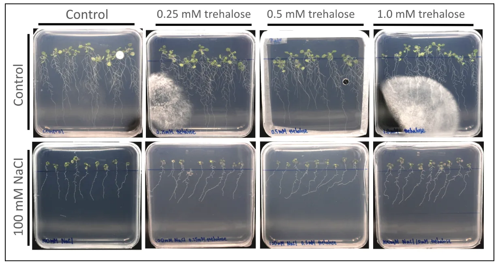
Set 4, last day. Columns are the trehalose dose, rows are 0 and 100 mM NaCl, and every root tip started on the blue line. The second row is the comparison the paragraph above describes. The fungal colonies on two of the unstressed plates are why Dr. Kyle's rule, that a contaminated plate contaminates its own data, became standing practice.
Experimental set 4, chlorophyll content with fresh weight normalization. Read with fix 6: the normalisation carries this figure, and the un-normalised column of the same workbook reverses it.
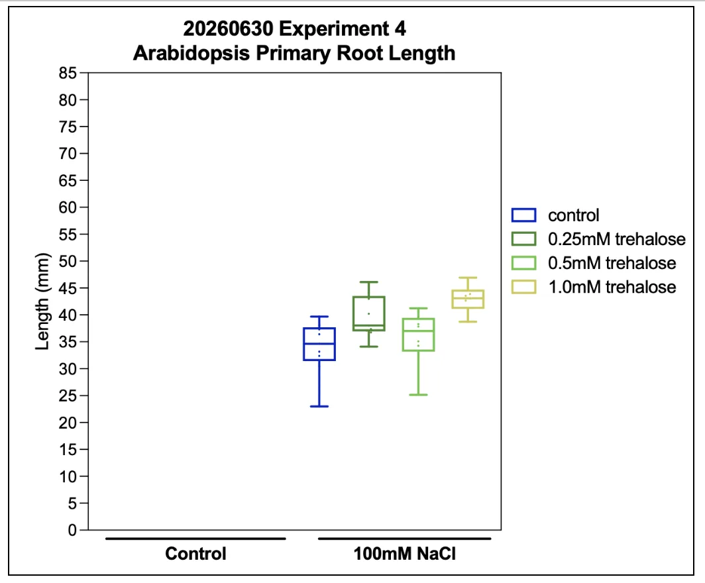
Set 4, primary root length by ImageJ. The unstressed groups are not plotted, so this chart compares the four salt groups with each other and not with a healthy plant. At day 10 the raw sheet reads 35.7 mm for salt alone against 39.6, 33.9 and 43.0 mm at 0.25, 0.5 and 1.0 mM. Nine seedlings per group, one plate each.
Set 5 · two trials, 4 to 27 July · 18 days · square plates, vertical
Finding the top of the range
Two trials
Why this set exists. Two questions at once: how much salt is too much, and whether a much higher trehalose dose does what the small ones could not. The dose pair came off a published study [2], and the set was also meant to give the dry lab a wider spread of points to model.
While conducting experimental set 5, we realized around 2 to 3 days in that some of the plants had turned white due to chlorosis, which accelerated the breakdown of chlorophyll, leading to a relatively lower chlorophyll content; more severe chlorosis causes total depletion of the pigment in plant leaves. Even in cases where 5 mM of trehalose and 10 mM of trehalose were used, all of the plates had at least one seedling that had shriveled up and turned white. We decided to redo the experiment in trial 2 with slight changes to our contained aseptic technique. The control groups without trehalose could reach up to 82.476 mm in root length, yet the 150 mM groups were limited at around 4 to 5 mm and the 250 mM groups stunted within 1 mm.
There was minimal contamination with trial 2 and the results presented were similar. Among the groups treated with high salinity stress, 250 mM NaCl is revealed to be way too toxic and damaging to the plant as most plant leaves turned white, indicating severe chlorosis and that a high trehalose dose yet couldn’t rescue the plants. In terms of root length, the plants under 250 mM NaCl stress obtained little to none root length growth within a 1 mm range, as shown in the primary root length plot below.
In addition, the chlorophyll content for all of the control agar plates, regardless of trehalose concentration, had around the same chlorophyll content, signalling a maximum efficiency that the trehalose can reach. However, under the 150 mM NaCl stress groups, the chlorophyll content turned out in a linear relationship: the higher the trehalose dose, the higher the chlorophyll content. The upward trajectory demonstrates the proportional relationship and consistent effectiveness of increasing the trehalose dose against a high level of stress. 150 mM NaCl serves as a severe salinity stress, whereas the 250 mM NaCl stress level is too high for the plants to sustain, and there even the chlorophyll content turned out inversely proportional.
Experimental set 5 trial 2, Arabidopsis growth condition comparison on day 6.
Experimental set 5 trial 1, chlorophyll content with fresh weight normalization.Experimental set 5 trial 1, primary root length.
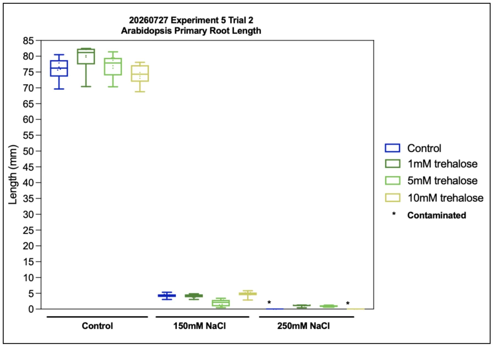
Set 5 trial 2, primary root length. Eighty millimetres to four, and then to nothing. The four boxes inside each salt level are the four trehalose doses, and they sit on top of each other.Experimental set 5 trial 2, chlorophyll content with fresh weight normalization.
The two trials picked different best dosesAnd set 6 was designed before the second analysis existed
Trial 1 read 5 mM as the best-performing dose and trial 2 read 10 mM. The disagreement was never resolved, and set 6 had already been designed around 5 mM by the time the second analysis was presented. That is a scheduling mistake and it is the reason the trehalose concentration question is still open.
Per-seedling data exists for both trials, nine seedlings per group in trial 1 and eight in trial 2. On day 3 of this set almost every root on the untreated 150 mM plate turned and grew upward or sideways, and no other group did it. We logged it as halotropism at the time. That is probably the wrong word: halotropism is a root bending away from a salt gradient, and a uniformly salted plate has no gradient, so the likelier reading is that salt disrupted the gravitropic response itself. It was never quantified, and root length from that plate is not comparable with the rest.
The team's own later reading is that the plants were too young for this stress. Four days of vernalisation and three at 22 °C, and nothing that age survives 250 mM.
Set 6 · 29 July to 3 August · 6 days · square plates, vertical
The salt ladder
Closed
Why this set exists. Set 5 established that 250 mM kills before a protectant can act. This set drops it, narrows the intervals under 150 mM, holds trehalose at one dose, and asks the simplest version of the question: across four salt levels, what does 5 mM trehalose change.
This is the set the rest of the page is calibrated on. Mean root length at day 6 falls from 74.95 mm with no salt to 34.77 at 75 mM, 11.00 at 100 mM and 1.36 mm at 150 mM, nine seedlings a group, with spreads that do not overlap. That is the dose-response for injury, and it is what set the screening window at 75 and 100 mM. It is drawn as Figure 2 in section 1.1.
The specific 5 mM trehalose concentration was isolated due to experimental results from our previous set, set 5, demonstrating that 10 mM was too toxic and 5 mM was performing the best to benefit plant growth. Furthermore, the previous set demonstrated that extreme salt stress such as 250 mM NaCl was too high for the plants to sustain, so we eliminated the highest NaCl concentration and chose smaller intervals under 150 mM for this set. However, we quickly realized that our protectant concentration of 5 mM was visibly not sufficient for 150 mM of NaCl because the leaves of both 100 mM NaCl trials turned purple or brown after 3 days of treatment. Overall we selected 3 testing NaCl concentrations with a relatively smaller interval (75, 100 and 150 mM NaCl).
Contrary to our initial hypothesis, the application of 5 mM trehalose did not confer a protective effect under mild salt stress (75 mM NaCl), instead resulting in reduced chlorophyll content and 5 cm shorter average root lengths compared to the untreated control, as we believed the 5 mM trehalose dose should have worked more effectively under a lower stress level than a high stress level. Conversely, trehalose supplementation proved effective under higher stress conditions (100 mM NaCl). This outcome suggests that 75 mM NaCl represents a mild or sub-threshold stress level where endogenous regulatory mechanisms inside the plants are still sufficient to maintain cellular homeostasis without exogenous protectants. Under these conditions, the addition of trehalose may have slightly disrupted osmotic balance. In contrast, 100 mM NaCl likely exceeds the threshold of intrinsic plant tolerance, which shifts the system into a moderate-to-severe stress state where the plants’ internal regulatory mechanisms are running out of their sustainable range, and exogenous trehalose becomes critical for mitigating the cellular damage, thereby sustaining significantly better growth compared to its untreated control. It is also observed that the root length of the 100 mM control was clearly much lower than that of 75 mM, barely growing even after 6 to 7 days of protection and NaCl treatments. The shift of physiological effects of plants under the 75 mM to 100 mM NaCl condition reveals the relatively strong growth inhibition 100 mM NaCl poses on plants, whereas 75 mM did not stunt the plant growth as much as 100 mM NaCl did.
Regarding the control groups, baseline chlorophyll levels remain comparable between the control and the 5 mM trehalose group, while there is a minor decrease in root length growth of the 5 mM trehalose group, indicating that the protectant alone has a negligible effect on unstressed plants.
Importantly, the application of 5 mM trehalose significantly enhanced plant salt tolerance under 100 mM NaCl stress. This is evidenced by an increase in chlorophyll content and a substantial increase in root length, relative to the untreated control, in the two figures below.
Once the salinity level reaches up to 150 mM NaCl, the high stress concentration severely damaged the plants, as evidenced by physically observed chlorosis and significantly stunted growth shown by data analysis, where 5 mM trehalose did not play much of a role in rescuing the plants, only demonstrating a minor increase in root length within 1 cm, nonetheless showing a decrease in chlorophyll content, indicating the insufficient amount and dose.
The caution on all of that is the one in fix 1 and in section 1.1: every one of those protectant differences is smaller than the standard deviation inside the group it came from. At 100 mM the treated group sits 3.71 mm above the untreated one against a pooled standard error near 2.3. Nine seedlings on one plate raise the precision of the measurement, not the number of experiments. And the 150 mM untreated bar is the tallest on the chlorophyll chart, above the unstressed control, which is fix 6 in one picture.
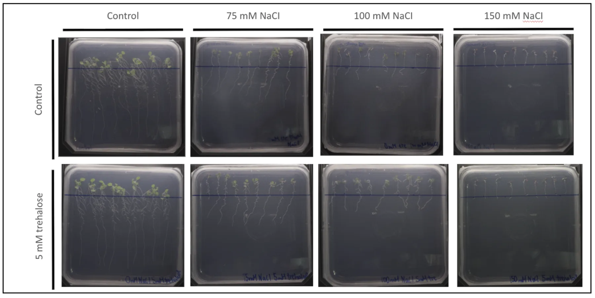
Set 6, day 13. Columns are the salt level, rows are untreated and 5 mM trehalose. The two rows are hard to tell apart, which is the honest summary of what trehalose did here. The two rightmost columns are what 100 and 150 mM look like with nothing left to rescue.
Experimental set 6, chlorophyll content with fresh weight normalization.Experimental set 6, primary root length. The same nine seedlings per group that Figure 2 is drawn from.
Set 7 · three trials, 1 August to 5 September · round plates, horizontal
Three treatment timings
Timing open
Why this set exists. Two changes at once. The compound becomes a commercial product with a known field dilution, so concentration stops being the variable. And treatment timing becomes the variable instead, because the question our bioreactor has to answer is when to start making a protectant, not how much to make. This is also the first direct test of whether a stress prediction model and field sensors are worth building.
A few of the results for the trials were inconclusive because of issues related to contamination, yet the repeated trials revealed the difference between earlier and later addition times of protectants.
Trial 2 is the clearest result on this page. At 100 mM the untreated plate carries a thin scatter of small yellow-green rosettes; co-treatment and after-treatment at the same salt level carry a dense green mat that is hard to distinguish from the unstressed control. At 75 mM the three arms are much closer together, which is consistent with 75 mM being the milder end of the window.
The red line demonstrates the gradient of concentration increase of NaCl from control to 100 mM NaCl, highlighting the progressive salt stress and damage to plants. The purple line displays the effects of co-treatment and after-treatment within the 75 mM NaCl group; as shown, both the treatment groups exhibited better growth in terms of leaf area and quantity of roots, while co-treatment demonstrates the best rescue effectiveness with the most amount of roots and displaying little to no anthocyanin accumulation relative to the control. The blue line demonstrates effects within the 100 mM NaCl group: while both treatment groups showed great rescue effectiveness, after-treatment demonstrates brighter green, larger leaf area, and higher relative chlorophyll content.
The timing ranking is not settled. Across the trials the three arms come out in different orders, and the chlorophyll charts cannot arbitrate: both label their x-axis groups ACCD, trial 1 has no untreated-control group on it at all, and both are divided by fresh weight. There is also a design confound. Under the pipetting protocol a pre-treatment plate still has peptide in its agar when the salt arrives, so that arm received more of it, which is reason enough not to read a pre-treatment gap as a timing effect. See fix 7.
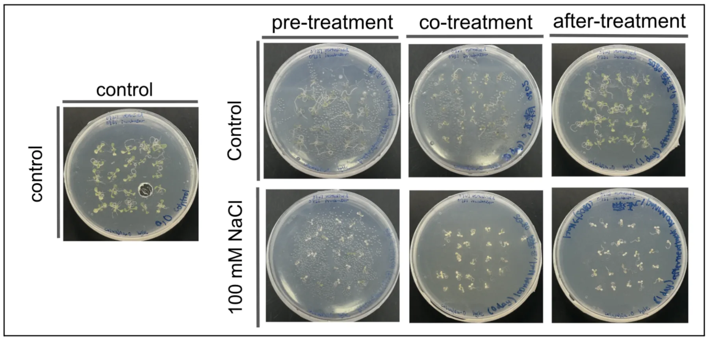
Set 7, trial 1, day 8. The speckling across both pre-treatment plates is bacterial contamination, and those two plates are not readable. Among what is readable, co-treatment holds the most rosette tissue and the least anthocyanin.
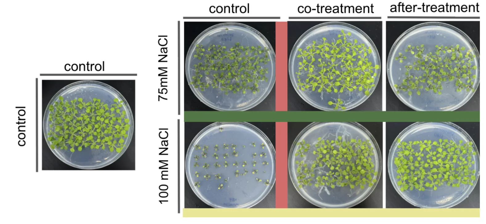
Set 7, trial 2, day 12. Read the bottom row left to right. The gap between the untreated 100 mM plate and the two treated ones beside it is the largest protectant effect anywhere in our plant record.Experimental set 7 trial 3, last day of observation.
Experimental set 7 trial 1, chlorophyll content with fresh weight normalization.Experimental set 7 trial 2, chlorophyll content with fresh weight normalization.
Heat pretest · 15 to 21 August · 5 days at 37 °C · square plates, vertical
Five days at 37 °C
Pretest
Why this run exists. Salinity is one of the two stresses the project is built for and heat is the other. This is the first attempt at a heat arm on agar, using the same three timings and the same peptide as set 7 so that only the stress changes.
No treated arm beat the control. On the un-normalised column of the chlorophyll workbook the control reads 35.5 against 20.2, 17.3 and 16.4 for the three treatment arms. The fresh-weight column of the same sheet says the opposite, and the two copies of that workbook disagree with each other on this sheet by a factor of five.
Every plate is pale and drawn out, and we cannot separate the causes. Lighting in the chamber was inadequate, and elongation is also the normal response of Arabidopsis to 37 °C. Add the spray application that Prof. Cheng has since ruled out for salt and protectant work, and this is a pretest.
It is also not thermopriming, whatever our early notes called it. Both published heat assays we read put a defined challenge in front of a defined recovery period [3, 4]. Ours has neither, so it is five days of sustained moderate heat.
Heat pretest, day 4. Four arms at 37 °C. Pale and drawn out in all four, which is what the chamber lighting and the temperature would both produce.
Set 8 · pretest sown 18 August, trial 1 sown 21 August · round plates
The ACC deaminase pretest
Void twice
Why this set exists. It is the first run on a protein our own engineered Bacillus subtilis made, which is the whole point of the project. Everything before it used a reference compound or somebody else's product.
Following the production of ACCD in our engineered bacteria, we began running tests directly on agar through an ACCD pretest. Data collected include fresh weight, chlorophyll content, and image documentation. However, due to contamination of the agar plates, it is predicted that the data may be inaccurate even with fresh weight normalization. We, along with other consulted professors, suspected that our ACCD could have been contaminated through the filtering process since it was done in the lab setting and not under the laminar flow machine.
Then the blot. The Western blot run on 24 August read the same B. subtilis culture that was being sprayed on plants and found no ACC deaminase in it. The single band near 41 kDa sits in the 18 August lane; the 23 August lane is empty. The pretest was not a failed test of a protectant. There was no protectant in it.
Trial 1 was sown on 21 August and photographed from the 27th, and it grew bacteria again. Our own reading, and that of the professors we asked, is the filtering step: the preparation went through the 0.22 µm filter on the open bench instead of inside the laminar flow hood, which puts the one sterile-technique step of the protocol in the one place with no clean air over it.
This is the most useful negative in the plant work. A protectant assay that cannot tell you the protectant was absent is not an assay, and the only reason we caught it is that the blot was run against the same batch that went on the plants. The rule it implies, blot every batch before it touches a plant, was not in force when it was needed: the August plan said to run the first two ACCD trials without an activity assay or a blot of their own, and both of those trials are now gone.
The reactor side of this is on the hardware page. The control arm is purified or commercial protectant and the product arm is B. subtilis supernatant; the gate between them is the blot, adopted in principle and not applied to either set 8 attempt.
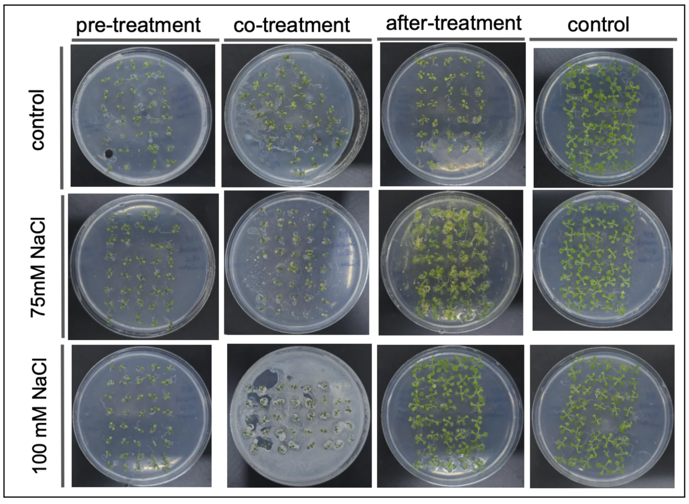
Set 8, day 13, before contamination took the plates. Read the control column on the right against the three treated columns: the control plates are clean and full at every salt level, and the dark patches on the co-treatment plate at 100 mM are bacterial. The colonies are on the plates that received the preparation, which is the whole finding.
Experimental set 8, chlorophyll content with fresh weight normalization. Every plate that carried ACCD also carried bacteria, so these values measure the contamination as much as the plant.
Counted in the summary table · no write-up on this page
ACCD, LEA14 and BoPep4
Awaiting data
Why this entry exists. The coverage grid above counts eleven sets. Four of them have no section, no figure and no measurement in the material this page was built from, and an empty slot is more useful to a reader than a missing one.
LEA14 exists in this project as the construct Csn:Lea, transformed on 3 June and worked up on the engineering side. BoPep4 is the dry lab's designed peptide and its sequence work is on the peptide design page. Both inherit set 8's protocol: treatment in the plate, plants moved onto it, three timings, 75 and 100 mM, older plants, and a blot of the batch first.
Nothing on this page claims a result for any of the four. What each one needs before it can be written up is the same list the panels above answer: dates, the stress and protectant concentrations, the control design, the readouts collected, and the figures. See fix 4.
Fix 7 · set 7's figures do not say what set 7 was
Both CH Bio peptide chlorophyll charts label their x-axis groups Pre-ACCD, Co-ACCD and After-ACCD. Set 7 used 富肽2號 at 1:500, not ACC deaminase. Trial 1's chart also has no untreated-control group on it, so the three treated arms are compared only with each other, and its y-axis runs to 50 relative units with no statement of what the reference group is. Trial 2's chart drops the pre-treatment arm.
Our write-up says the after-treatment group gave the most consistent rescue. Trial 1 ranks after-treatment first at 100 mM; trial 2 does not separate the arms; the un-normalised column of trial 3 puts only the two salt-stressed pre-treatment arms above their matched controls. Before that sentence goes on a results page, whoever wrote it should name the trial, the workbook and the normalisation it came from, and the axis labels need correcting.
Fix 8 · two timeline figures, one file
The figure set supplied on 30 September contains Fig1_ExperimentalSets4-7FullExperimentTimeline.png and Fig2_ExperimentalSets8-10FullExperimentTimeline.png. The two files are byte-identical. Sets 8 onward ran a seven-day germination window instead of four, so their timeline cannot be the same drawing. Only the sets 4 to 7 version is published here, as Figure 4 in section 1.1; the sets 8 to 10 timeline has to be redrawn.
Three smaller label problems travel with it. The set 4 panel is filed as day 12 and described in the text as day 14. The set 7 trial 1 write-up describes a 75 mM group with coloured guide lines that is not in the figure supplied, which carries 0 and 100 mM and no lines. And the set 4 account refers to “Fig. 3” and “Fig. 4” by numbers that belong to the draft document and not to this page.
Fix 9 · three bookkeeping errors in the root length workbook
12 July is recorded twice. In Arabidopsis Root Length Raw Data.xlsx, sheet experiment 5 (trial 1), the same date appears as two blocks. The first writes NA for control seedlings 3 and 8 and gives a mean of 32.18 mm; the second, headed Raw + Outliers, puts 5.412 and 0 in those cells and gives 25.63. Twelve group means differ and neither block is marked as superseding the other.
An average over seven seedlings divided by nine. Sheet experiment 4, 30 June, the 0.25 mM trehalose row. Two seedlings read “cannot measure, mold grew too big”; the other seven read between 40.2 and 85.5 mm. The stated average is 54.98, which is the sum of the seven divided by nine. Over the seven actually measured it is 70.69, and the same group reads 43.17, 57.76 and 63.78 on the three preceding days.
Three of the four root length documents are mislabelled.Experiment set_Root Length _.docx heads itself experiment 5 at 0, 100, 150 and 200 mM; its eight values are the experiment 4 row for 27 June. Experiment Set 5 Trial 1 Root Length.docx says 200 mM and June; the data is 250 mM and July. Experiment Set 5 Trial 2 Root Length.docx names trehalose doses the raw sheet does not contain. Nothing on this page is drawn from those headers.
22 August. Checking an extract by eye before it goes in the plate reader. Dr. Kyle's suggestion: photograph the tubes, then confirm the reader's ranking matches what the colours already told you.The same afternoon. Fresh weight before chlorophyll, forty seedlings at a time, one tube per group.
Hydroponics
One salinity set and two heat sets, all with the same four arms. One box per arm, which is enough to set the experiment up and not enough to decide it.
The hydroponic runs ask the same timing question as agar set 7 and ask it with a wider spacing, three days instead of one, because a box is not disturbed by a transfer the way a plate is. Four boxes: untreated control, pre-treatment, co-treatment and post-treatment, all with CH Bio peptide at 1:500.
Salinity · set 1
100 mM NaCl went into all four boxes on 28 July, when the plants were 13 days old, and all four were harvested on 4 August for chlorophyll and fresh weight. Box 2 had peptide three days before the salt, box 3 on the day, box 4 three days after.
What the run established is the dose, not the ranking. 100 mM NaCl puts significant stress on a 13-day-old Arabidopsis in water without killing it, and that is what fixed the concentration for the hydroponic work that followed.
On the timing, the two normalisations disagree, and this run is the cleanest worked example on the page of why a normalisation has to be declared before the numbers are read. Per gram of fresh weight the control comes first at 0.0828 and co-treatment comes last at 0.0617, with pre-treatment at 0.0782 and post-treatment at 0.0734. Per plant, which is the extract before anything is divided by weight, co-treatment comes first at 1.251 and the control sits mid-table at 0.714, with pre-treatment at 0.997 and post-treatment at 0.369. The boxes differ 2.4-fold in fresh weight, from 0.0503 to 0.2029 g, and that spread is the whole of the disagreement.
Chlorophyll per gram of fresh weight
Control0.0828#1
Pre, day −30.0782#2
Co, day 00.0617#4
Post, day +30.0734#3
Chlorophyll per plant, not normalised
Control0.714#3
Pre, day −30.997#2
Co, day 01.251#1
Post, day +30.369#4
Figure 5. The same four boxes, divided two ways. Hydroponic salinity set 1, 100 mM NaCl, one box per arm, harvested 4 August. Co-treatment, highlighted, is last per gram of fresh weight and first per plant. The boxes differ 2.4-fold in fresh weight, and that spread is the whole of the disagreement. Values as recorded in the hydroponic chlorophyll workbook, the one workbook in the archive with the correct wavelength throughout.
Our write-up says the co-treatment group grew best visually and had the highest total chlorophyll and fresh weight. On the per-plant column and on fresh weight that is right. On the per-gram column co-treatment is last of four. Both are in the record; the write-up states one of them without saying which, and with one box per arm neither settles anything.
Figure 6. The hydroponic timing schedule. Drawn by the team on the run's own record sheet. It is also where the protectant is named, box by box, which a text search of the archive misses because it is written inside a picture.Figure 7. Four boxes, three days out of eleven. Sowing day, salt day and harvest day from the daily record. No photograph of box 4 exists for 25 July. By 4 August the co-treatment box does carry the most tissue, which is what the write-up reports.
Heat · two sets
The first heat set put 10-day-old plants at 33 °C for seven days with the same three timings and the same peptide. The result was not what we expected, and the reading we took from it is that seven days of continuous heat is too long: the stress stops being something a protectant could be measured against and becomes the thing that ends the experiment. The exposure was cut to three days, and a second set repeated the design at 37 °C.
Chlorophyll was read three times per box in the second set. The control is highest per gram of fresh weight and every treated arm lower; per plant the pre-treatment box edges just above the control. Three readings of one tube measure pipetting, not biology, and there is still one box per arm.
The conditions block for the heat sets in hydroponic testing record.docx is empty, so the temperature and duration above come from the written draft and not from the run record. Whoever ran them should fill that block in.
Soil
Three dated trials, two stresses, and no measurement recorded against any of them. The soil arm is running and unread.
The soil work reached execution later than the other two systems, and what exists is a protocol that has been argued out properly and a set of trials that have been photographed and not scored. Stating that plainly is more useful than implying a result.
Soil trials, 2026
Soil · 23 August
The first ACCD trial, and the blot that voided part of it
Two trays were relabelled into five arms: pre-, co- and after-treatment, a 150 mM NaCl control and an untreated control. They were photographed through 1 September under the heading “Started the ACCD experiment”.
The B. subtilis preparation sprayed on 23 and 24 August is the one the Western blot of 24 August found to contain no detectable ACC deaminase, so those two days do not count as a treatment. The deck records no measurement of any kind.
Soil · 6 September
Choosing between two published salt schedules
We evaluated the two published methods of tuning salinity levels, from Cheng et al. [9] and Kim et al. [8]. Two pots, one per protocol, went into the incubator on 6 September with 2 week old plants. There was more obvious salt stress growth inhibition in the soil pot using Prof. Cheng’s paper protocol, whereas the accumulation method did not cause much stress damage. The data has not been collected yet, but by eye we will choose Prof. Cheng’s paper for future soil salinity testing.
The decision was taken by eye and no data was collected. The revised 100 to 200 to 300 mM schedule in section 1.3 follows from it.
Soil · 12 September
ACCD under salinity
For the salinity trial that went into the incubator on 12 September, with 2 week old plants, we tested three application timings of ACCD protectant, including pretreatment, cotreatment and aftertreatment, under the NaCl wash of 100 mM then 200 mM until reaching a final concentration of 300 mM NaCl.
Soil · 22 September
ACCD under heat
For the heat trial that went into the incubator on 22 September, we tested the same three application timings of ACCD protectant, pretreatment, cotreatment and posttreatment, under 37 °C in the incubator for a total heat stress time period of 5 days, followed by 5 days of recovery at 25 °C in the growth chamber.
This is the one run on the page with a recovery phase in its design, which is what the published heat protocols have and our agar pretest did not.
Fix 10 · the soil arm is unmeasured, not void
Three soil trials are dated, photographed and running, and none of them has a number attached. The readouts named for soil are rosette area, morphology, survival and seed set, and the decks record none of them.
Two questions have to be answered before this section can say anything else. Whether the 23 August trial ran entirely on the batch the blot later found empty, or whether a later batch was used for part of it. And whether anything from the 12 and 22 September trials was weighed, photographed for area, or extracted. The soil team has to say.
Dry lab collaborations
The dry lab work focuses on two questions: how much protectant is needed, and how early does it need to be applied. We have not been able to determine either value yet, but our plant experiments give us a starting point.
Effective concentration prediction
Our original plan was to build a dose-response curve using protectant concentration and a rescue index, which compares the treated plant's response with an unstressed control under the same salt concentration. We could then estimate the concentration at which additional protectant produces little further improvement and use it as the bioreactor's production target.
Trehalose was originally our test case because we had six experimental sets. However, root length did not show a consistent relationship with trehalose concentration. The effective range appeared to fall between a concentration with little effect and one that was toxic, and two trials using the same design in set 3 gave opposite results. We therefore could not fit a reliable curve, and trehalose was removed from our circuit design in August.
In set 7, we also tested treatment timing by applying the protectant before, during, or after salt stress. However, the trials gave inconsistent rankings between the three treatments, so there is not yet enough data to fit a timing model.
Data quality also limits the modelling. Each agar group was represented by only one plate, and three experimental sets had problems with the absorbance wavelength used for chlorophyll measurements. Fitting a curve with this data would give a quantitative-looking result without enough evidence to support it.
For now, our most useful modelling result is the salt calibration. Using nine seedlings per group, mean root length decreased from 74.95 mm at 0 mM salt to 34.77 mm at 75 mM, 11.00 mm at 100 mM, and 1.36 mm at 150 mM. Plants at 75 mM retained 46% of the control root length, while 150 mM reduced root growth by roughly 55-fold. This defines a useful stress range for future experiments, but does not yet tell us how much protectant is required.
We measured three different indicators of plant health: root length, fresh weight, and chlorophyll. Each captures a different part of the plant's response to stress, but using all three separately makes it difficult to use them in a single model. We therefore developed a stress index that combines them into one value for each group.
For each measurement, the stressed or treated plants are compared with the unstressed control from the same experiment. The resulting values are then combined into a single score. A value of 1.0 represents the matched unstressed control, while a value closer to 0 represents a severely damaged plant.
The weighting of the three measurements needs to be decided before looking at the results. Otherwise, the weights could be adjusted to make the final data look better. We also calculate the index from the original measurements rather than from already-normalized values. This is important because normalizing chlorophyll to fresh weight can introduce the measurement issue described earlier on this page.
Figure 8. Our model in 4 parts, 15 August. The model is divided into sensing, expression, transport, and plant response. The plant-response section is the part that uses the data from our plant experiments.Figure 9. Working sketches from 15 August showing how different protectant treatments might affect plant biomass. These are conceptual predictions, not fitted results.
Because our current data are not sufficient for a reliable dose-response fit, we also considered several alternatives:
Use the measured salt-response data directly. If additional replicates are not available, we can report the salt calibration as measured points instead of fitting a curve.
Use published dose-response relationships as a starting point. If data for a similar protectant are available, we can use the published curve shape and fit only the scale to our own data. Any borrowed parameters would be clearly identified.
Compare treatment timing instead of fitting a curve. The pre-, co-, and post-treatment groups can still be ranked even if there are not enough points for a full model.
Combine the three plant measurements. The stress index gives us a way to use root length, fresh weight, and chlorophyll together rather than choosing only one measurement.
Hydroponics with Prof. Cheng
Our hydroponics setup started with a visit to Professor Cheng Mei-Chun's laboratory at NTU in March. At the time, we didn't have a hydroponic protocol or any plants growing. We went to learn how her group grew Arabidopsis, created five hydroponic system prototypes, and brought it back to her in August.
27 March
Learning from Prof. Cheng
We visited Prof. Cheng's lab with no plants and no established protocol. She showed us how her group grows Arabidopsis on agar and in hydroponics, and gave us seeds to take back to our lab.
Her hydroponic setup was much simpler than we expected. It used plastic containers with foam boards that held the seedlings above the medium. We had assumed that a hydroponic rig was something you had to buy, but since there was no specialized commercial equipment, we decided to build our own version.
Prof. Cheng showing us an Arabidopsis agar plate.The hydroponic boxes and float boards in Prof. Cheng's lab.The Arabidopsis seeds we brought back from the visit.
April to July
Building our own system
We started making our own hydroponic boxes based on the setup we had seen at NTU. Our first prototypes used different combinations of containers, float plates, filter paper, and seedlings.
The first four prototypes had problems with contamination. Depending on the prototype, between 1 and 7 out of 10 seeds germinated before contamination became a problem. We kept changing the setup to identify where the contamination was coming from and to find a way to keep the seedlings in place.
Prototype 4 was the first design that allowed us to keep seedlings growing for several days without an immediate failure. On 7 June, we transferred seedlings from agar into the box. The setup stayed clean for the first six days, although contamination eventually became a recurring problem across our hydroponic experiments.
We also learned that maintaining the medium was more complicated than simply replacing water when it evaporated. On 17 June, Dr. Kyle pointed out that topping up the evaporated medium would increase the concentration of the substances that remained behind, including salts and sugars. From then on, we treated evaporation as a variable instead of simply adding water back to the box.
On 20 June, Prof. Chen Wen-liang suggested moving toward a recirculating system. We had also considered an automatically filled reservoir, but neither design was built during this round of experiments.
30 May. Making the float boards by hand before our 3D-printed version.26 April. Three float boards made for different reservoir sizes.
11 August
Looking at a larger system
We visited 源鮮智慧農場 to see how hydroponics was handled on a commercial scale. Our setup at the time held about 250 mL, so seeing rows of larger growing systems gave us a different perspective on how the floating structure could be supported.
We were particularly interested in the underside of the growing channel, where the float board was supported. We discussed the design while we were there and started modifying our own CAD model that same day.
Looking at the underside of a commercial hydroponic growing system.The hardware that carries the channels, which is the part our own box does not have.Redesigning the float plate after the farm visit. The current design has thirteen planting positions.
28 August
Returning to Prof. Cheng
In August, we returned to Prof. Cheng's lab with two of our hydroponic boxes and an update on our progress. We went through the suggestions she had given us in March and discussed which ones we had been able to implement. Four of the seven had been completed; the ROS staining experiment had not, and we told her that directly.
By this point, we had also removed trehalose from the circuit design and completed the salt ladder experiments. The main problem we brought back to her was contamination. We were still seeing contamination in our hydroponic boxes, even when we changed the medium every two to three days.
One possibility was the agar left in the seedling caps. Our seedlings were transferred with ½ MS medium containing 1% sucrose, and the combination of agar, sugar, warmth, and moisture could provide conditions for other organisms to grow. We also still had questions about why the plants were staying small and whether this was related to the medium strength, agar hardness, or light conditions.
We offered to leave two of our setups with Prof. Cheng so that she could observe them over a longer period. This gave us a chance to get feedback on problems that were difficult to diagnose from individual experiments.
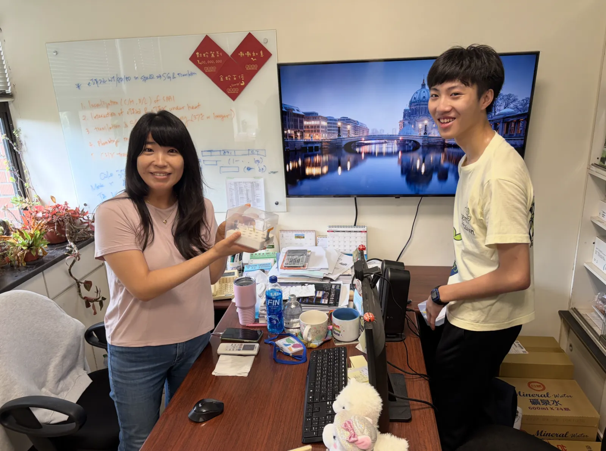
Returning to Prof. Cheng's lab with our hydroponic setups in August.
Outreach
Our plant work was shaped by conversations with researchers, farmers, industry professionals, and students. Between March and August, we made thirteen visits and spoke with people who helped us make changes to our experiments, hardware, and understanding of plant stress.
Laboratories
We met three plant scientists at different stages of the project. Each gave us feedback that changed part of our experimental design.
Prof. Cheng Mei-Chun, NTU, met with us on 27 March and again on 28 August. During our first visit, she introduced us to her Arabidopsis growing methods and gave us seeds to take back to our lab. Her advice influenced our agar protocol and hydroponic design. When we returned in August, we discussed our progress and the problems we were still having with hydroponics. Her later feedback also led to changes in plant age, application method, and the soil stress schedule described in section 3.3.
Dr. Verslues, Academia Sinica, met with us on 4 April. He showed us the vertical Arabidopsis plates used in his growth chamber, which inspired the vertical rack on this page. He also suggested gradually increasing soil salinity rather than applying the full stress level at once. We later discussed this approach with Prof. Cheng, who pointed out that the increase we had planned would be too mild for a month-old plant.
Prof. Chen Wen-liang met with us on 20 June and again at CH Biotech on 9 July. We discussed our bioreactor, mathematical model, and planting device. His feedback led us to consider a recirculating hydroponic system and an automatically filled reservoir. Although we have not built the auto-filling reservoir yet, the idea remains part of our future hardware plans.
4 April, Academia Sinica with Prof. Verslues. Vertical Arabidopsis plates in a growth chamber. We used this setup as a reference when designing our own rack.20 June. Prof. Chen reviewing our proposed auto-filling reservoir.
Farms and markets
We also wanted to understand plant stress from the perspective of people who actually grew crops.
At the 花博農民市集 on 16 May, we interviewed farmers about the problems they encounter in their fields. Weather and water were among the issues they mentioned, along with the cost of treatments used to address them. These conversations helped us think about plant stress as a practical agricultural problem and not only as a laboratory condition.
On 21 July, we visited Teacher Chen Hui-wen's farm. She showed us how she evaluated the soil and plants in the field, and we helped harvest okra and luffa. We also talked with her about seeds and farming practices. After the visit, the team developed a prototype for a seed-trading platform based on some of the needs she described.
16 May, 花博農民市集. Interviewing farmers about the problems they encounter while growing crops.21 July. Teacher Chen Hui-wen showing us the plants and soil in her field.Teacher Chen Hui-wen during our visit.
Industry
We also visited two organizations working with agricultural biotechnology and hydroponic farming.
At CH Biotech (正瀚生技) on 9 July, researchers introduced us to their work and their plant biostimulant products. Their regulatory specialist also explained some of the requirements involved in bringing a plant biostimulant to market. We were given 富肽2號, which became the protectant used in experiment set 7. We tested it at three different application timings across several trials. Because it is a finished product, we do not know its exact active component, so we refer to it as a protectant instead of attributing its effects to a specific compound.
At 源鮮智慧農場 on 11 August, we visited a commercial hydroponic farm and discussed our own hydroponic setup with the farm director. Seeing the scale of their system helped us rethink the structure of our 250 mL laboratory setup. We began modifying our hydroponic hardware design after the visit; more details are included in section 3.3.
9 July, 正瀚生技. Learning about CH Biotech's research and plant biostimulant products.9 July. 富肽2號, which we later used in experiment set 7.11 August, 源鮮智慧農場. Looking at a commercial hydroponic system and comparing it with our laboratory setup.
Classrooms
Our outreach activities also gave us opportunities to teach younger students about the plant biology behind our project.
At DingXi Elementary School on 25 June and 2 July, we introduced students to photosynthesis, genes, and synthetic biology. We also demonstrated chlorophyll extraction using leaves and acetone. The experiment gave students a way to see plant biology directly instead of only through slides.
At Fushing in June and again on 14 August, we introduced students to synthetic biology, DNA, engineered mutants, and iGEM. These activities helped us explain the same concepts we use in our own experiments at a level that younger students could understand.
25 June, DingXi Elementary. Introducing photosynthesis before the chlorophyll extraction activity.2 July. Students extracting chlorophyll from leaves.
The public
Our 5 September public forum event brought several parts of our plant work together in one place. We prepared a booth, presentation, and soil trays to introduce our project and experiments to visitors. It also gave us a chance to see how well we could explain the project outside of the laboratory.
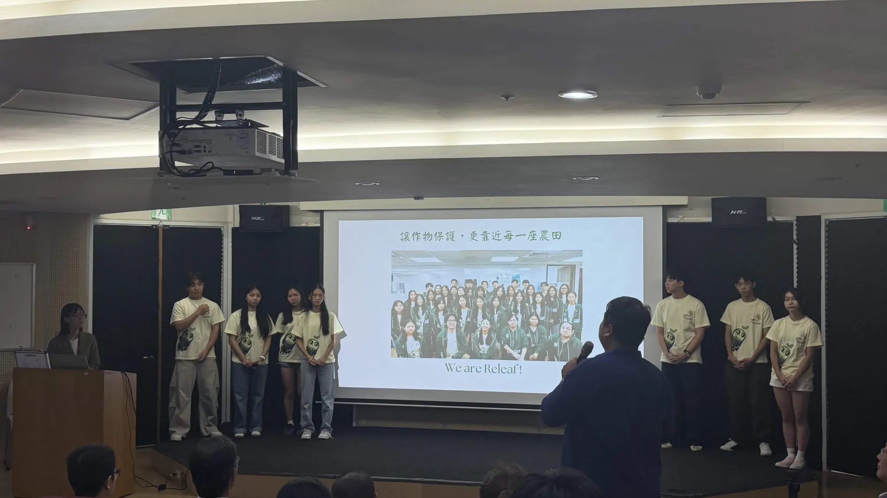
Presenting our project to both a public audience and experts we invited.
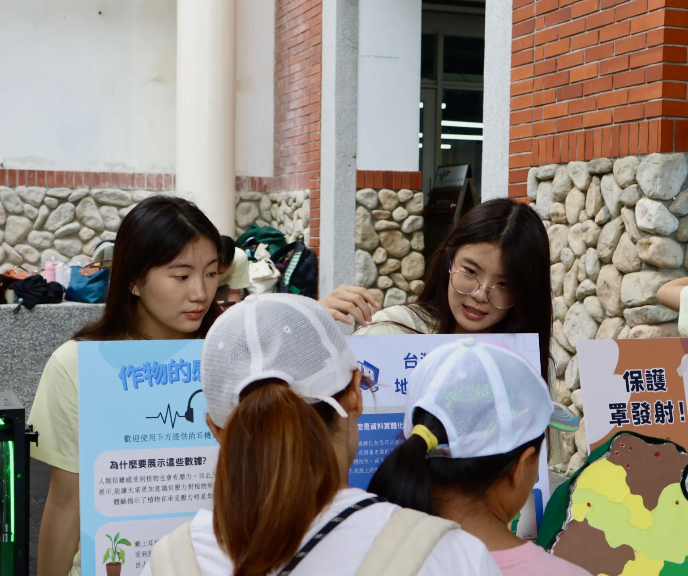
Explaining regions of high crop stress in Taiwan.
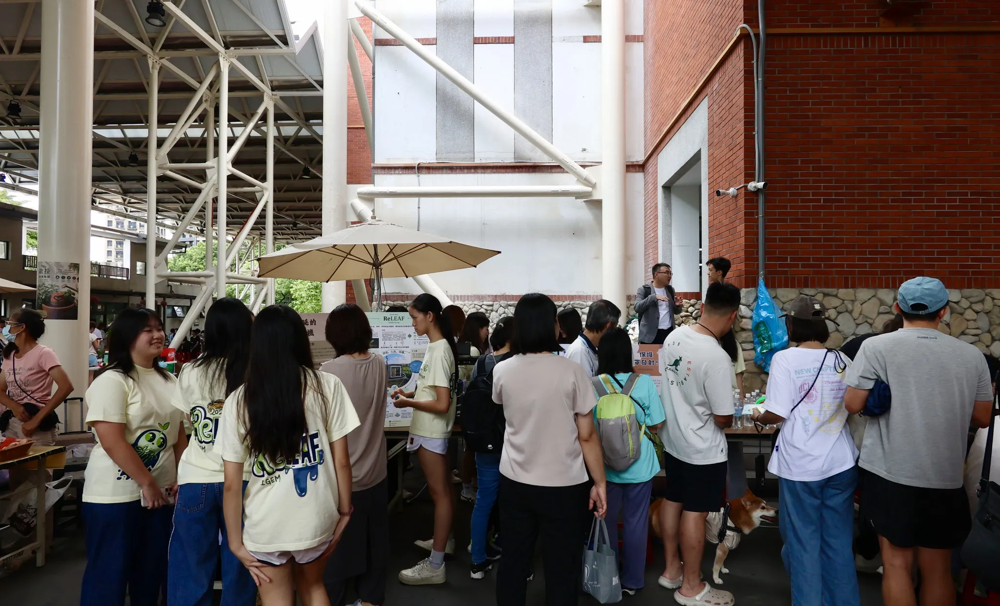
The public forum event booth.
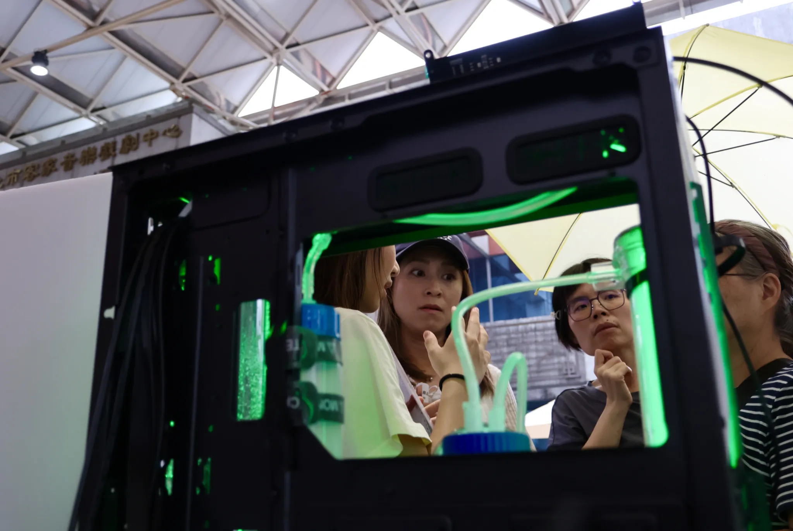
Introducing our bioreactor to the public.
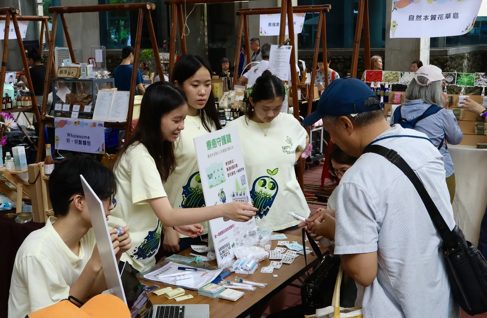
The prize for those who visit all stops at our booth.29 August. Forum preparation, a week out.
Future work
Active peptide identification
The CH Bio peptide is a mixture. If it rescues a plant, we do not know which component did the rescuing.
The route is ordinary deconvolution: fractionate the preparation, run the fractions through the same three-timing assay at 75 and 100 mM, and keep whichever fraction carries the effect. It needs an assay whose noise is smaller than the difference between fractions, which is a stricter requirement than anything the screen has met so far, and it is why this sits under future work and not in progress.
A commercial mixture is also the wrong endpoint for a project whose output is a bacterium expressing one thing. Identifying the active component is what turns a product that works into a sequence that can be built.
High-throughput screening
The current assay costs about 24 days per protectant: four of stratification, ten in the chamber, three of staggered treatment and seven of observation, plus the harvest. Four protectants at three timings and two salt levels is more plates than four people can transfer by hand without the transfer itself becoming the variable.
Three changes would take it from a bench protocol to a pipeline, and all three are in reach of a team next year:
Round plates and rosette imaging: forty plants per plate, scored from a single photograph, instead of ten roots traced by hand in ImageJ. The move to horizontal plates in August was the first step; automated rosette segmentation is the second.
Treatment in the medium, not on the plant: set 8's transfer protocol removes the application step that broke two trials. It scales in a way that pipetting and spraying do not.
A fixed imaging rig per plate format: the vertical holder already exists. The same idea for round plates, with controlled white balance, would let colour be a readout instead of a caution.
What we would hand a team picking this up: the protocol, the ladder, the failure list, and a standing instruction to run the reference compound alongside every screen. Our six sets of trehalose took two months, and writing them up should save the next team from repeating them.
9 August. Forty seeds to a plate, placed one at a time. This is the step the pipeline above is trying to make unnecessary.
Who advised this work
Four people between them set the readouts, the exclusion rules, the plant age, the salt schedule and the shape of the hydroponic box. Almost every correction on this page is traceable to one of them.
Dr. Kyle · weekly, from June Set the three readouts, the rule that a contaminated plate contaminates its own data, and the rule never to top up evaporated medium. Told us to plot chlorophyll with and without fresh-weight normalisation, which is the only reason the artefact in section 2.2 is visible at all.Prof. Cheng Mei-Chun · 27 March and 28 August Gave us the seed and the plate protocol, then the rulings we wrote up on 2 September: ten to twenty day old plants, a 200 mM ceiling, transfer instead of spray, and a soil ramp that does not wash itself out.Dr. Verslues · 4 April Academia Sinica. The vertical-plate rack on this page is copied from his chamber, and the gradual soil salinity build-up we ran in August was his suggestion.Prof. Chen Wen-liang · 20 June, 9 July Pushed the hydroponics toward a recirculating design, and took apart the auto-filling reservoir we had drawn ourselves.
We also learned the plate and hydroponic protocols in person, at Prof. Cheng's laboratory at NTU and at the Verslues lab at Academia Sinica, before running any of this ourselves.
References
Boyes, D. C. et al. Growth stage-based phenotypic analysis of Arabidopsis: a model for high throughput functional genomics in plants. The Plant Cell13, 1499–1510 (2001). Link
Trehalose and salinity dose ranges in Arabidopsis. Set both the 1–10 mM trehalose and the 150 and 250 mM NaCl levels used in experiment set 5. PMC4212613
Lee, J. H. et al. A rapid assay for assessing bacterial effects on Arabidopsis thermotolerance. Plant Methods19, 63 (2023). A 45 °C challenge with a recovery phase; considered and not adopted. doi:10.1186/s13007-023-01022-0
Auverlot, J., Reichheld, J.-P. & Dard, A. Assays to study plant response to high temperature in Arabidopsis. Methods in Molecular Biology2988, 9–19 (2025). Used for the developmental stage and the structure of a heat assay. doi:10.1007/978-1-0716-4981-7_2
Zhang, Z. & Huang, R. Analysis of malondialdehyde, chlorophyll, proline, soluble sugar, and glutathione content in Arabidopsis seedling. Bio-protocol3(14) (2013). The chlorophyll extraction followed from set 4 onward; sets 1 to 3 have no chlorophyll data. doi:10.21769/bioprotoc.817
Root length quantification. Recommended to us alongside SmartRoot, which we did not end up using; all root lengths on this page were traced by hand in ImageJ. Bio-protocol 1216
Gillham, M. Hydroponic culture system for Arabidopsis. The lid-and-rack germination step and the float-board transfer in section 1.2 follow this method. Full citation still to be supplied by the team.
Kim, K., Kyaw, E. P., Ramasamy, K., Walitang, D. I. & Rajasekaran, R. ACC deaminase producing Methylobacterium oryzae CBMB20 and exogenous trehalose application alleviate salinity stress in Arabidopsis. Journal of Microbiology and Biotechnology35, e2501007 (2025). Source of the 25 mM daily soil accumulation schedule we started with. doi:10.4014/jmb.2501.01007
Cheng, M.-C., Liao, P.-M., Kuo, W.-W. & Lin, T.-P. The Arabidopsis ETHYLENE RESPONSE FACTOR1 regulates abiotic stress-responsive gene expression by binding to different cis-acting elements in response to different stress signals. Plant Physiology162(3), 1566–1582 (2013). Source of the soil salt schedule we adopted after the 6 September comparison. doi:10.1104/pp.113.221911
This page is a draft with ten open fixes.
Each amber box above is an editorial note for the team, numbered F1 to F10.
Delete a box when its problem is resolved, and delete this box when none
are left. In order: F1 the set 6 root length document against the raw
workbook, F2 the NaCl masses in the written agar protocol, F3 how many
seedlings go on a plate, F4 the four runs counted in the coverage grid
with no write-up behind them, F5 the chlorophyll wavelength and the two
workbooks, F6 fresh-weight normalisation inverting set 6, F7 set 7's
figure labels and the timing ranking, F8 the duplicated timeline figure,
F9 three bookkeeping errors in the root length workbook, F10 the
unmeasured soil arm. F4, F5 and F6 are the three that change what the
page can claim; the rest are corrections to the record. Reference 7
also needs its full citation. Sections 3 and 4 are signed off and
carry no fixes. Then set Status in the header
to Final.